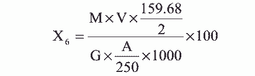

在 pH1.7～2.2 时 Fe3+和 EDTA 形成络合物，以苯甲酰苯基羟胺为指示剂，用 EDTA 标 准溶液滴定。
1. 1+1 氨水。
2. 2%苯甲酰苯基羟胺乙醇溶液（钽试剂）。
3. 2mol/L 氯乙酸溶液。
4. 0.01mol/L 乙二胺四乙酸二钠（ EDTA）标准溶液配制及标定同 4.2.9 项。
滴定管： 25mL。
1. 吸取测定酸不溶物后的滤液 20～50mL，于 250mL 锥形瓶中，用水稀释至约 75mL，用 1+1 氨水中和至 pH1.5～2.5，加入 5mL2mol/L 氯乙酸溶液。
2. 将溶液加热至 60～70℃，然后加入 2%苯甲酰苯基羟胺指示剂约 1mL，趁热 用 0.01mol/L EDTA 标准溶液滴定至溶液由紫红色变黄色为终点。
三氧化二铁的含量 X6（ %）， 按下式计算：

式中： M——EDTA 标准溶液的浓度，摩尔/升；
V——滴定消耗 EDTA 标准溶液的体积，毫升；
G——试样的重量，克；
A——吸取测定酸不溶物后滤液的体积，毫升；
159.68——三氧化二铁的摩尔质量，克/摩尔。
平行测定两结果差不大于 0.2%。
取平行测定两结果的算术平均值，作为垢样的三氧化二铁的含量。